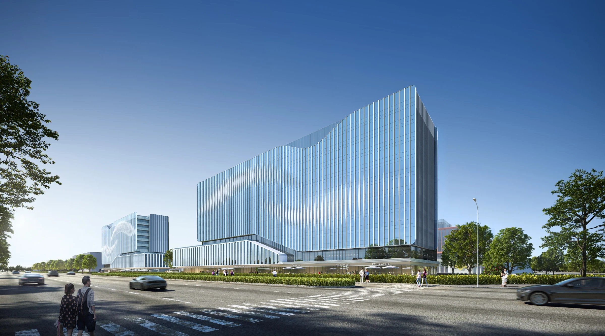

ZHONGAN CHUANGGU DIGITAL PARK
中安创谷数科园
数据云上，万物互联
安徽 · 合肥
研发办公 · 产业园 / 2024.02

- 地点
- 安徽 · 合肥
- 年份
- 2024.02
- 类型
- 研发办公 · 产业园
- 阶段
- 报规方案
- 参与
- 项目设计参与 · 团队协作
- 设计团队
- 深圳市建筑设计研究总院有限公司合肥分院
PROJECT / 项目
项目位于合肥经开区紫云路与云门路一带。沿街高层建筑与内部低层研发组团共同围合园区，通过入口、庭院和景观路径，将不同尺度的研发空间组织为相互联系的工作场所。
01 / DESIGN园区与城市界面
沿紫云路、云门路建立连续的建筑界面，以不同高度的体量回应园区外部尺度。
02 / DESIGN低层组团与庭院
内部研发建筑围绕共享景观展开，利用庭院与步行路径建立日常联系。
03 / DESIGN材料与近人尺度
以玻璃、金属构件及局部暖色界面组织立面节奏，区分沿街形象与组团入口。